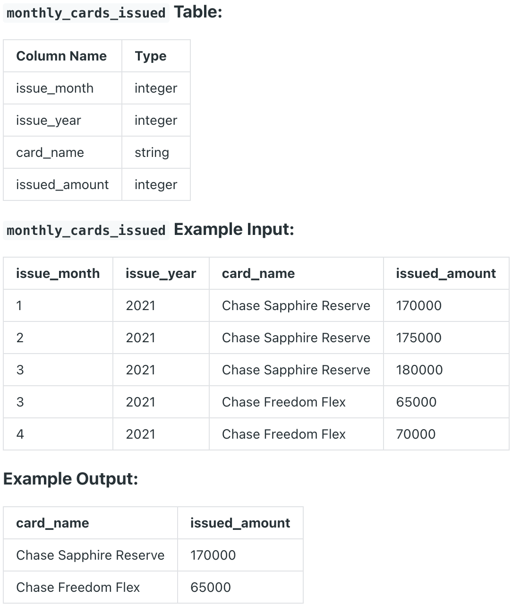

Question sourced from DataLemur.com.
Database: PostgreSQL
Your team at JPMorgan Chase is soon launching a new credit card. You are asked to estimate how many cards you'll issue in the first month.
Before you can answer this question, you want to first get some perspective on how well new credit card launches typically do in their first month.
Write a query that outputs the name of the credit card, and how many cards were issued in its launch month. The launch month is the earliest record in the monthly_cards_issued table for a given card. Order the results starting from the biggest issued amount.

/*
My strategy: Create a RANK() window function, ranking by issue
year and month for each card, wrapping this query in a CTE. Then,
filter only the rows that have a rank of 1 for each card to get
the issue amount at the launch month.
*/
WITH card_months_ranked AS (
SELECT card_name, issued_amount,
RANK() OVER(
PARTITION BY card_name
ORDER BY issue_year, issue_month) AS ranked_date
FROM monthly_cards_issued
)
SELECT card_name, issued_amount
FROM card_months_ranked
WHERE ranked_date = 1
ORDER BY issued_amount DESC;